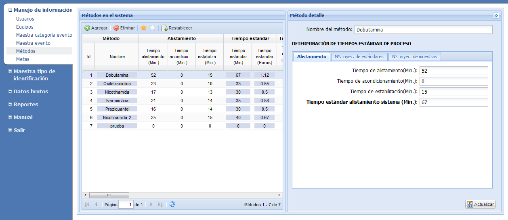
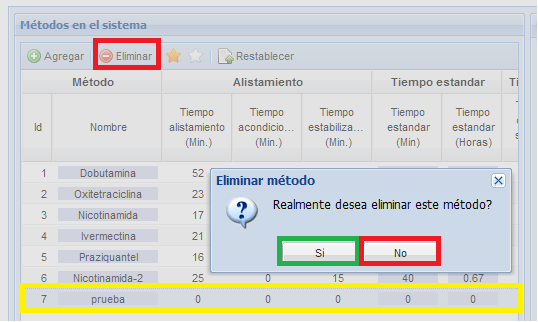
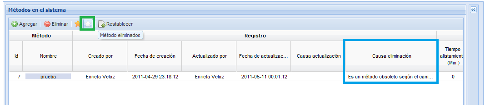
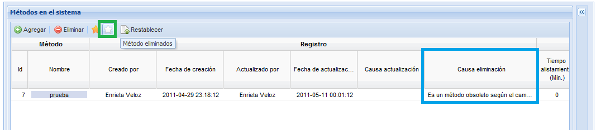

MANUAL DE USUARIO
TPM-QLabs - MANEJO DE MÉTODO
Cuando el usuario selecciona del
menú la opción Métodos, el
sistema le desplegará una pantalla como la que se muestra en la
Figura 1. En esta pantalla el usuario podrá crear, actualizar,
eliminar, visualizar y de ser necesario restablecer un método.

Figura 1. Pantalla para el manejo de
métodos.
Agregar
método
Actualizar
Eliminar
Restablecer
Para agregar una método
pulse el botón Agregar,
diligencie el formulario ubicado al lado derecho de la pantalla
y pulse el botón Guardar.
La información que se debe ingresar es la siguiente:
- Nombre del método: Ingrese el nombre de la método (es un campo obligatorio)
- Alistamiento:
- Tiempo de alistamiento (min): Digite el tiempo (en
minutos) que se demora generalmente en alistamiento.
- Tiempo de acondicionamiento (min): Digite
el tiempo (en minutos) que se demora generalmente en
acondicionamiento.
- Tiempo estabilización (min): Digite el tiempo (en minutos) que se demora generalmente en estabilización.
- Información de estándares:
- Número de inyecciones por estandar de system suitability
- No. inyecciones sln. Test: Digite el número de inyecciones para soluciones Test.
- Tiempo de corrida sln. test(min): Digite el tiempo de
corrida solución system.
- Número de inyecciones por estandar
- No. inyecciones std 1: Digite el número de inyecciones estándar 1.
- No. inyecciones std 2: Digite el número de inyecciones estándar 2.
- No. inyecciones std 3: Digite el número de inyecciones estándar 3.
- No. inyecciones std 4: Digite el número de inyecciones estándar 4.
- No. inyecciones std 5: Digite el número de inyecciones estándar 5.
- No. inyecciones std 6: Digite el número de inyecciones estándar 6.
- Tiempo de corrida están de calibración (min) : Digite
el tiempo de corrida para estandares (niveles de
calibración)
- Información de muestras:
- No. inyecciones producto terminado: Digite el número de inyecciones por producto terminado.
- Tiempo de corrida producto terminado: Digite el tiempo de corrida en producto terminado.
- No. inyecciones muestra estabilidad: Digite el número de inyecciones por muestra de estabilidad.
- Tiempo de corrida muestra de estabilidad: Digite el tiempo de corrida en muestra de estabilidad.
- No. inyecciones muestra materia prima: Digite el número de inyecciones por muestra de materia prima.
- Tiempo de corrida muestra materia prima: Digite el tiempo de corrida en muestra materia prima.
- No. inyecciones muestra pureza: Digite el número de inyecciones por muestra de pureza.
- Tiempo de corrida muestra de pureza: Digite el tiempo de corrida en muestra de pureza.
- No. inyecciones muestra disolución: Digite el número de inyecciones por muestra de disolución.
- Tiempo de corrida muestra de disolución:
Digite el tiempo de corrida en muestra de disolución.
- No. inyecciones muestra uniformidad: Digite el número de inyecciones por muestra de pureza.
- Tiempo de corrida muestra de uniformidad: Digite el tiempo de corrida en muestra de uniformidad.
Actualizar
Para actualizar un método,
seleccione un método de la lista, actualice la información del
método seleccionado en el formulario del lado derecho y pulse el
botón Actualizar. El
sistema desplegara una pequeña ventana
donde le preguntará porque razón desea actualizar el método,
digite la razón y pulse el botón Aceptar.
Luego el sistema le mostrará un breve mensaje en el que informa
del éxito del cambio.
Eliminar
Para eliminar un método, seleccione un
método de la lista (1) y pulse el botón Eliminar
(2), tal y como se muestra en la Figura 2. El sistema
desplegará una pequeña ventana donde le preguntará si realmente
desea eliminar el método en la que debe seleccionar la opción Si (3).

Figura 2. Pantalla para la confirmación de borrado de métodos.

Figura 4. Listado de métodos eliminados.
Figura 2. Pantalla para la confirmación de borrado de métodos.
Luego se desplegará la
pantalla mostrada en la Figura 3 en donde debe ingresar la
razón del porqué desea eliminar el método y pulsar el botón Aceptar. Luego el
sistema le mostrará un breve mensaje en el que informa del
éxito de la eliminación.

Figura 3. Pantalla para el ingreso de la causa de eliminación de
método. Los métodos eliminados
pueden visualizarse dando clic en el botón Métodos
Eliminados identificado con una estrella blanca
(1). Note que en la columna
Causa eliminación (2) se puede observar la causa de
porqué fue eliminado algún método en particular. En la Figura
4 se muestra el listado de métodos eliminados

Figura 4. Listado de métodos eliminados.
Restablecer
Si usted ha eliminado un método por equivocación,
usted tiene la posibilidad de recuperar la información
seleccionando la opción para ver los métodos eliminados
(estrella blanca), seleccione de la lista la método que desea
recuperar y pulse el botón Restablecer,
el sistema le preguntará porque razón usted desea restablecer el
método, digite la razón y pulse el botón Aceptar.
Luego el sistema le mostrará un breve mensaje en el que informa
si se ha restablecido con éxito el método. Los metodos
restablecidos ya se podran visualizar en el listado de los
métodos activos.